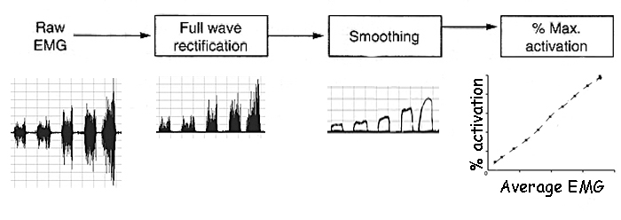
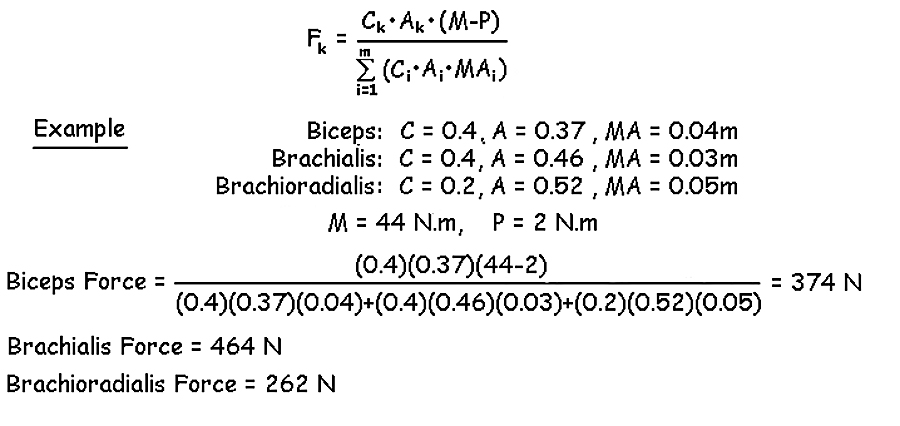
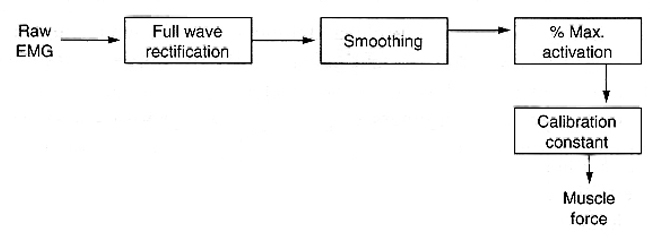
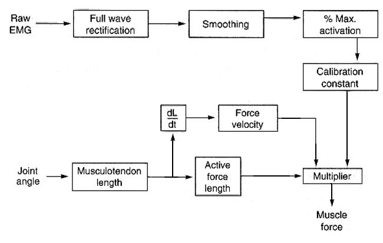
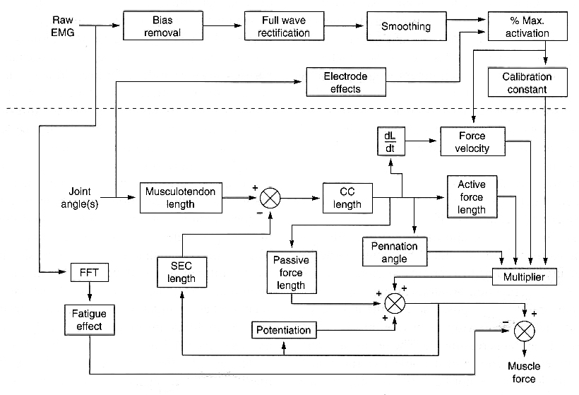
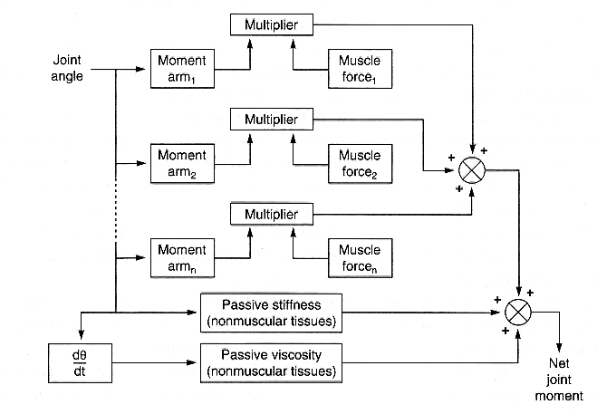
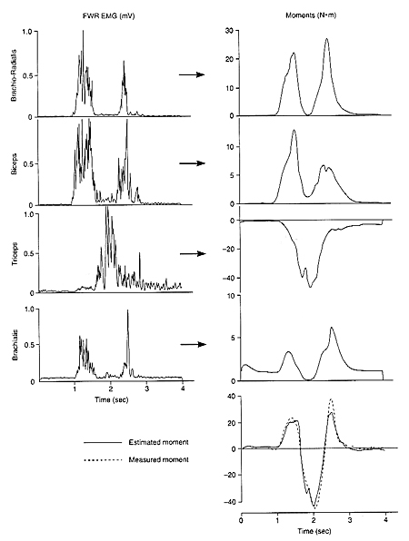

Individual Muscle Force Estimation

In the previous lectures, we saw that joint reaction forces were not the same as actual bone-on-bone forces. Click here if you wish to review that lecture. We also saw that direct measurement of individual muscles in living human subjects was unacceptably invasive and optimization lacked validity (Click here for that lecture). In this lecture, we will look at a method of using electromyography to estimate individual muscle forces and solve the indeterminacy problem. The reader should already be familiar with the EMG lectures.
Muscle Model
The EMG lectures showed that electromyographic electrodes placed on the skin over a target muscle or in the target muscle via fine wire, could measure a signal that could be processed to reflect the amount of activity in the target muscle.

This method is shown in the diagram to the right. Briefly, the raw EMG signal is full wave rectified and smoothed with a lowpass filter. The signal is then converted to a percent of activation by have the subject exert various levels of effort from relaxed to maximum effort and fitting a linear or slightly nonlinear line of best fit through the data (see the EMG lectures for details). It was stated that this process could represent the force of the individual muscles under isometric non-fatigued contractions. We will first calibrate the percent activation to muscle force and then developed the model to accommodate dynamic contractions.
Calibration:
Calibrating the amount of muscle force from % activation is not straight forward because many muscles cross the joint and produce the net joint moment that we can measure. However, we know that muscle force is proportional to cross-sectional area and the moment is achieved via the moment arm of the muscle. Therefore, it is possible to partition the measured isometric net joint moment into individual muscle forces based on the moment arms and sizes of each muscle crossing the joint. The formula is given below, along with an example of three elbow flexor muscles. The subject performed a submaximal isometric elbow flexion of 44 N.m (M) of which 2 N.m was due to passive stretch (P). The relative cross-sectional areas of the Biceps, Brachialis and Brachioradialis was 40%, 40% and 20%, respectively (C) the activations were 37%, 46%, and 52%, respectively (A) and the moment arms were 4 cm, 3 cm, and 5 cm, respectively (MA).


The equation above allows the calculation of the kth muscle using the size C, leverage (MA) and activation (A) of itself relative to the total of all the muscles (m) in its group. By substituting the data in the example, it was found that Biceps activation of 37% generated 374 N of force (10.11 N per % activation). Similarly, when the same calculation was made for Brachialis, its 46% activation was equal to 464 N (10.09 N per % activation) and 52% activation of Brachioradialis produced 262 N (5.04 N per % activation). Adding this calibration constant to the muscle model is shown in the figure to the right.
Force-length and Force-velocity adjustments:
In order to extend the model to allow muscle force estimations in dynamic contractions, we must account for the fact that muscle generates different forces at different lengths and velocities even if the activation is constant.

The figure to the right shows how the muscle model can be extended to include force-length and force-velocity effects. The joint angle kinematics must be measured and converted to the individual muscle length. The force-length relation would have a value of 1.0 at the optimum length and decline as the muscle shortens or lengthens from that optimum. The force-velocity relation would have a value of 1.0 at isometric or zero velocity and decline hyperbolically as shortening velocity increases and increase with a lengthening (eccentric) contraction. For more detail on these relations, click here.
These two modifiers yield two unitless numbers that are multiplied by the calibration constant to give an estimate of muscle force during dynamic contractions.
Other considerations:

The muscle model could be even further extended to include fatigue effects using the shift in median power frequency, stretch in the series elastic element, recovery of stored elastic energy, potentiation effects and even changes in electrode pickup as a function of joint angle.
Joint Model
Since it is not feasible to measure individual muscle forces in living human subjects (see the Indeterminacy lecture), we must combine the muscle model with a joint model to estimate the net joint moment which we can measure.

The figure to the right shows a method of multiplying each individual muscle force by its respective moment arm and adding those to the passive joint properties (stiffness and viscosity) to produce an estimated joint moment that can be compared to the measured net joint moment. This is an indirect validation of the muscle forces but if we test the estimations over a wide range of contraction conditions, and the estimations are a good representation of the measured moment, we can have confidence in the individual muscle force estimations.
Example:

The figure to the right shows the results of using surface electrodes over Biceps, Triceps, and Brachioradialis as well as fine wire electrodes in Brachialis. The EMG of each of the four muscles was processed to yield forces that were multiplied by their respective moment arms which are shown on the far right. The Triceps moment is considered to be negative because it is opposite to the three flexor muscles. The bottom graph shows the sum of the four muscle moments and passive moments to get the estimated net joint moment which is plotted with the measured net elbow joint moment.
It can be seen that the estimated moment is quite close to the measured moment which gives promise to the accuracy of the individual moments and muscle forces.
Problems with Indirect Validation:
Even though there is a good agreement between the estimated and measured moments, there is the possibility that the force in one muscle was over-estimated while a synergist was under-estimated. If a poor agreement results, it is difficult to determine which element in the model requires improvement. Many of the elements in the model are based on literature values or animal research that cannot be directly compared to an individual subject or patient. However, the optimization method could only use phasic EMG patterns as validation because the measured moment was already used in the partitioning. Therefore, the EMG method of estimating individual muscle forces has stronger validation.
Direct Validation with Animals:

The direct measurement of individual muscle forces has been performed on animals using tendon transducers. The figure on the right shows measured tendon forces from a cat soleus muscle during walking (M). EMG of the cat's soleus was also measured and applied to a muscle model that yielded a predicted muscle force (P). The predicted force is quite close to the measured force which indicates that dynamic muscle forces can be predicted from EMG and directly validated.